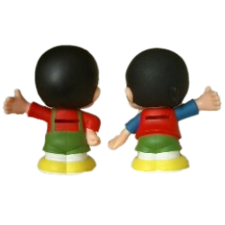
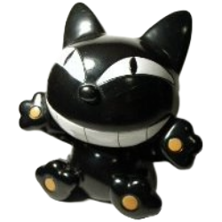
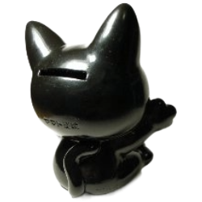
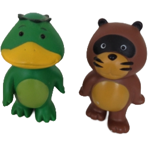
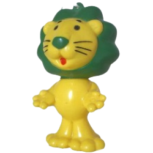
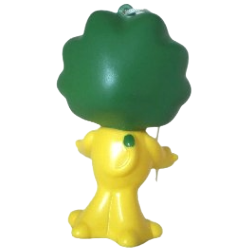

昭和レトログッズ その6
Old but Gold. 昔なつかしいもの集めました。納めきれなかったものたち
English version is under construction. Please stay tuned!
ヤン坊マー坊貯金箱
貯金箱
ヤンマーのヤン坊マー坊貯金箱。
ヤン坊がお兄ちゃんでマー坊が弟ちゃんです。ヤン坊は慎重。マー坊はおっちょこちょい。ヤン坊の趣味は読書、スポーツ。マー坊の趣味はTVゲーム、ラジコン。 時代によってデザインが少しずつ変わっていますが、このデザインになったのは1980年代後半ぐらいからでしょうか。
「ヤン坊マー坊天気予報」の放映開始は昭和34年だそうです。当時はアニメーションがほとんどない時代で珍しく始まったとたん大人気だったそうです。 この貯金箱は3代目のデザインだったと思います。
ヤン坊がお兄ちゃんでマー坊が弟ちゃんです。ヤン坊は慎重。マー坊はおっちょこちょい。ヤン坊の趣味は読書、スポーツ。マー坊の趣味はTVゲーム、ラジコン。 時代によってデザインが少しずつ変わっていますが、このデザインになったのは1980年代後半ぐらいからでしょうか。
「ヤン坊マー坊天気予報」の放映開始は昭和34年だそうです。当時はアニメーションがほとんどない時代で珍しく始まったとたん大人気だったそうです。 この貯金箱は3代目のデザインだったと思います。
入手：？
ヤマト運輸のクロネコ
貯金箱

ヤマト運輸のクロネコ貯金箱
後ろには「HORIGUCHI」とあります。イラストレーターの堀口忠彦さんという方でした。堀口さんの他の作品には、 NHKみんなのうたの「しあわせのうた」のイラストや、「ルドルフとイッパイアッテナ」など私にとって懐かしいものがいっぱいでした。気がつかんかったなぁ・・・。
後ろには「HORIGUCHI」とあります。イラストレーターの堀口忠彦さんという方でした。堀口さんの他の作品には、 NHKみんなのうたの「しあわせのうた」のイラストや、「ルドルフとイッパイアッテナ」など私にとって懐かしいものがいっぱいでした。気がつかんかったなぁ・・・。
入手：2003年
カッパとタヌキ
フィギュア
DCカードのカッパとたぬき
カッパのみいただいてずっと持っていました。タヌキ一匹見つけたので、一緒に並べました。
カッパのみいただいてずっと持っていました。タヌキ一匹見つけたので、一緒に並べました。
入手：？
ライオンちゃん
フィギュア

ライオンのライオンちゃん
ライオンちゃんはお父さんだけどライオンちゃんみたいです。ライオン君、ライオンお父さん、ライオンお父ちゃん･･･どれも変だな。
ライオンちゃんはお父さんだけどライオンちゃんみたいです。ライオン君、ライオンお父さん、ライオンお父ちゃん･･･どれも変だな。
入手：？